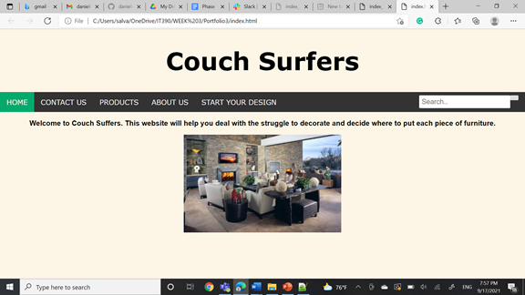
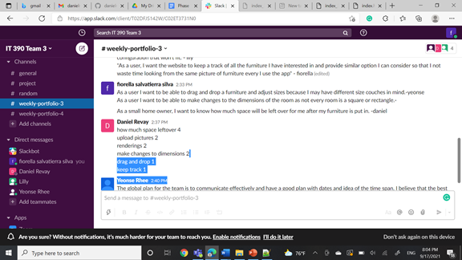
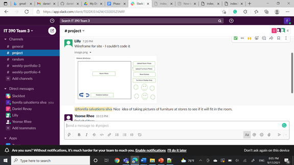

Week Portfolio 3
Fiorella Salvatierra
It 390-001
September 10, 2021
Team Members:
Daniel Revay
Linley Mancilla
Fiorella Salvatierra
Yeonse Rhee
Team Contract:
Team strength: Our strength is that all have experience in different IT aspects so can support each other during the project development. Also, we communicate clearly of how to make the project possible and organize tasks.
Team weaknesses: Our weakness is that we has less members than other teams so each members will have more workload than we planned.
Agile Roles
Product Manager:Linley Mancilla
Product Owner: Daniel Revay
Scrum master:Fiorella Salvatierra/Yeonse Rhee
Development Roles
Yeonse Rhee - Web Design/Programmer
Fiorella Salvatierra - Database Specialist
Linley Mancilla - Business Specialist
Daniel Revay - Product Owner and Web Design/Programmer
Fiorella:IKEA, Ashley Furniture, Williams-Sonoma, Thrift sotres, Interior design companies or workers, Families (especially for newlywed or families with kids)
Linley Mancilla: Home owner, Supporters, Professional Interior decorator, Real Estate agents
>Yeonse Rhee: Mason Students, Furniture Stores, Friends
Daniel Revay: Maason students, Furniture stores
Team Stakeholders:
Mason Students,
Furniture stores,
Homeowners,
interior design workers
Fiorella's User story propose:
"As a Couch Sufers user, I want to upload my own pictures from the places or furniture so that I can have realistic design from the app."
"As a Couch Sufers user, I want a table with furniture options that I can include them in picture so that I can have better idea of what I want or need to buy "
"As a Couch sufers user, I want the website to keep a track of all the furniture I have interesed in and provide similar option I can consider so that I not waste time looking from the same picture of funiture every I use the app"
Yeonse Rhee:
As a new lease tenant I want to be able to map out my room with my current furnitures to have an idea of how everything may go together because I want to be able to move into my new place and not waste time figuring out where everything goes.
As a user I want to be able to drag and drop a furniture and adjust sizes because I may have different size couches in mind.
As a user I want to be able to make changes to the dimensions of the room as not every room is a square or rectangle.
Linley Mancilla:
As a home owner I want a photo of my desired room with different room configurations (furniture lay out) in order to consider the options that bring me the most joy.
As a home owner I want my digital renderings of possible room configurations to be to scales so that I do not spend effort or time with configuration that won’t fit.
As a home owner I want to drag and drop the desired pieced of furniture throughout the room
As home owner I want to have the ability to have at least six furniture items to drag and place in the photo of my room, as this provides my the greatest functionality for this application.
As a home owner I want to view the possibility room configurations in 360 degree manner to truly ensure the layout is to my liking.
Daniel Revay:
As a small home owner, I want to know if my furniture will fit into my room.
As a small home owner, I want to know how much space will be left over for me after my furniture is put in.
As an elderly home owner, I want to know if I need to hire someone to move a piece of furniture before buying it.
Votes:
how much space leftover 4
upload pictures 2
renderings 2
make changes to dimensions 2
drag and drop 1
keep track 1
Good ones: the first foor represent the min purpose of our web application. We want to make sure that users ca upload their pictures and change the size withput restrictions.
Bad ones: there were not bad options or opinions. We just realize that we want do not want overflow our team with to much work and expections can nnot be rech at the end of the semester.
Desing the Website structure: Web developers should start designing the structure of the web application such as the size, menu, colors. The web design should take from 2-3 weeks after the first meeting then the team will provide feeedback and decide about any necesary changes. The programers will have an extra week to include the changes and wait for the team's approval.
Desing database structure: Once the team decide the topics of the project the Database analyst should start designing the databse structure based on the idea of the project. The analyst should take around 2-3 week to prepare the desing and then present it to the team for feedback. If some changes need to be included the analyst will take one week to implement them and get the final team approval.
Decide and develop the Dynamic functionality: The team should identify the most esential functionalities that the project should include during the website design. Once the team decides about the fuctionalities the programmers will develop and include on the website. The decision making should take maximun one week and implementation will be another 1-2 weeks. Programmers will present web application with the implementation and provide feedback. If changes need to be implemented then the programmers will have 3-4 dys to finish and obtain team's final approval.
Team's plan: The global plan for the team is to communicate effectively and have a good plan with dates and idea of the time span. I believe that the best way to finish our assignments is to start and finish early and have a few days to look over anything we missed. For the project itself, we are looking to make a website or an application that will allow our users to implement a furniture moving layout.
Half of the week task
Schedule task: 09/15/2021
What you did: Create a basic design for the proposed team project and present it to the team memebers
Screeshot
Source code attached
HOMERe-planning needed: After have the basic idea each team member has the option to develop a basic code for the page and then show to the other teams.
Team standup meeting: I show my design to te other team and share the tabs that we can consider. Also I share my user stories and with the team we decide wich one will be the best ones.
End of the week task
p>Schedule task: 09/17/2021What you did: Share the basic or complete design tp the other members and decide features, user stories and stakeholders our project will have.
Screeshot
 Source code attached
Re-planning needed: We decide to create Github and share our codes. We have decide the stakeholders and first four user stories. Then we assign the next task for each member of the team
Team standup meeting: I like to share my user stories and one was chosen. Also, I share my documents with the team in Github so we can use it as a blueprint.